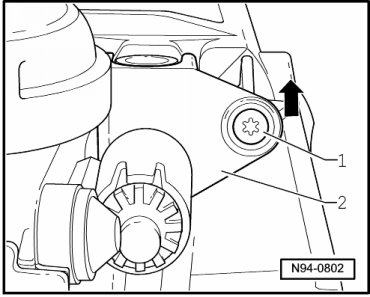
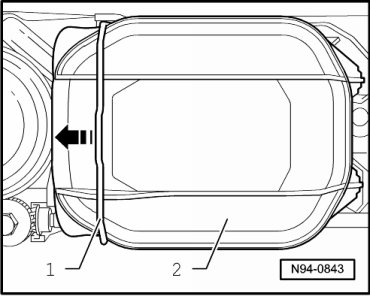
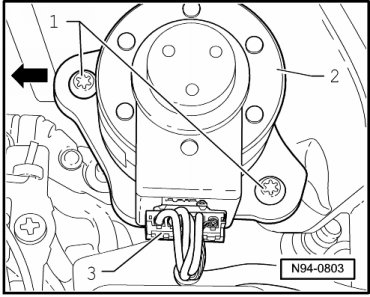
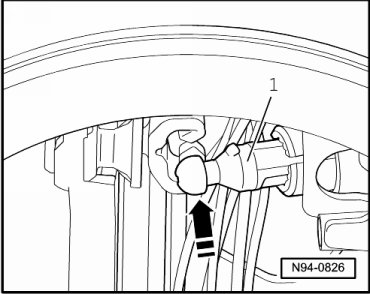

Halogen Headlamp Range Control Positioning Motor, through 11.06
Halogen Headlamp Range Control Positioning Motor, through 11.06
• If adjustment motors are removed and installed or replaced, headlamp adjustment must be checked and headlamp must be adjusted if necessary.
• Illustrations depict replacement of headlamp beam adjusting motor at left headlamp.
• Replacement of Left Headlamp Beam Adjustment Motor (V48) and of Right Headlamp Beam Adjustment Motor (V49) is performed analogously.
Removing
- Switch off ignition, switch off all electrical consumers and remove ignition key.
- Remove headlamp --> [ Headlamps, through 11.06 ] Headlamps, through 11.06.
- Remove screw - 1 - and press adjusting shaft for low beam and high beam height adjustment - 2 - in - direction of arrow - out of guide.

- Pull adjusting shaft for low beam and high beam height adjustment - 2 - out of headlamp housing.
- Press wire bracket - 1 - to the side in - direction of arrow - and remove cover cap - 2 -.

- Disconnect connector - 3 -.

- Remove screws - 1 -.
- Press the adjusting motor - 2 - in - direction of arrow - in order to pull out adjusting axle ball head laterally out of ball head mount at reflector.
- Remove adjusting motor - 2 - from headlamp housing.
Installing
Install in reverse order of removal, noting the following:
• When installing cap, ensure proper seating. It is destroyed by ingress of water into headlamp.
- Insert adjusting axle of adjusting motor - 1 - carefully into ball head guide - arrow -.

- Check headlamp for function.
- Check and adjust headlamp aim if necessary.